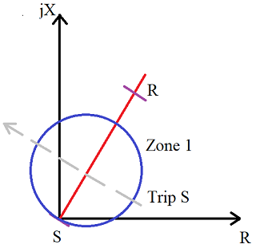
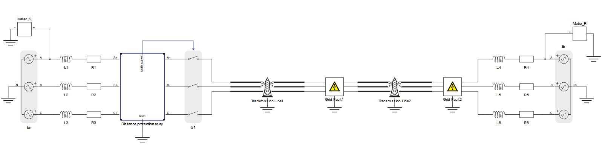
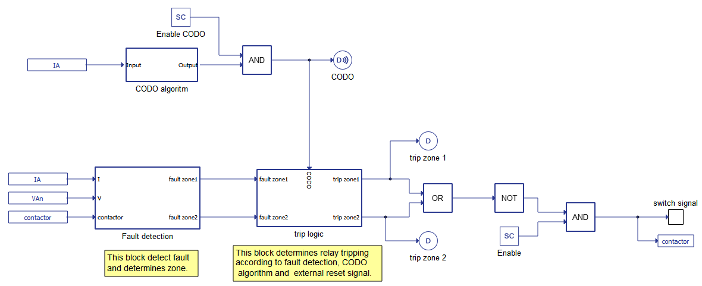
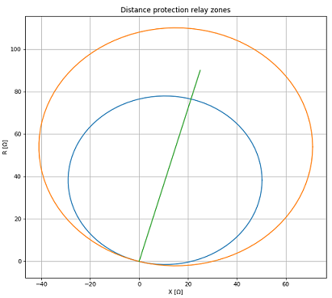
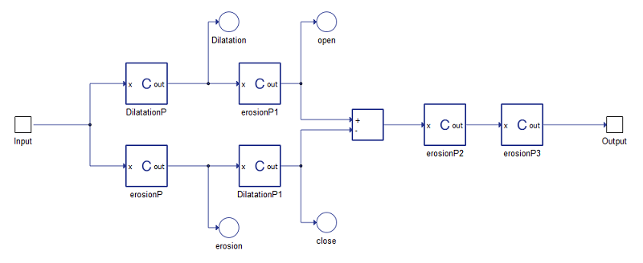
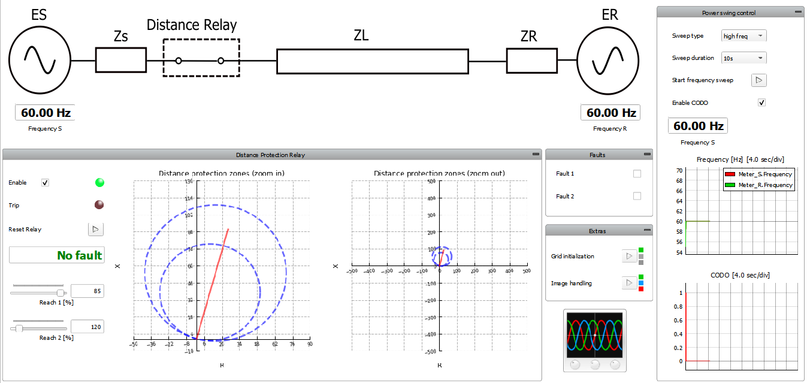
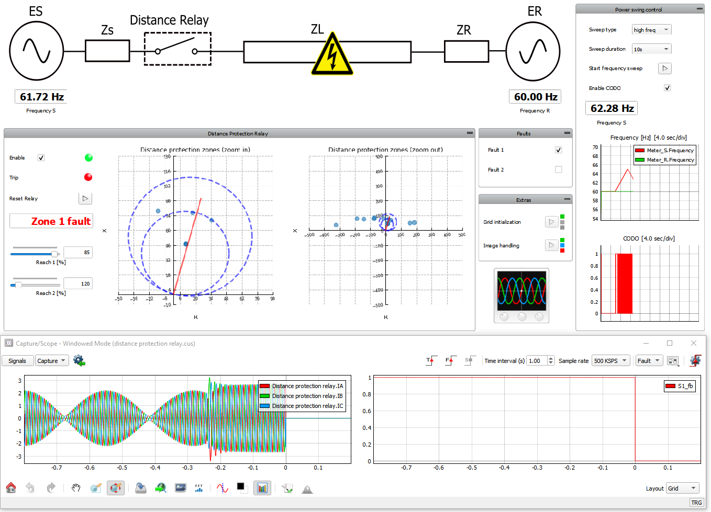
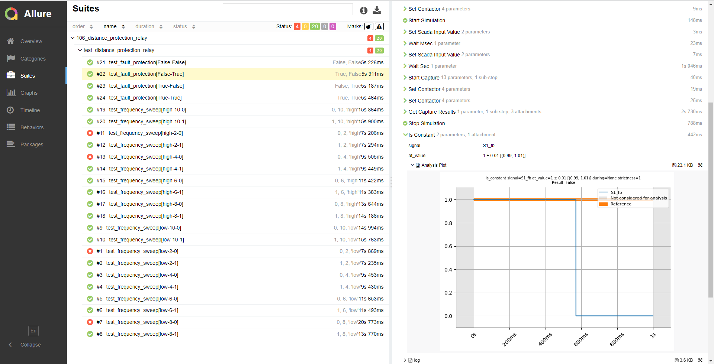

Distance protection relay with false tripping prevention
Simulation of a distance protection relay connecting two grids with fault injection.
Introduction
A distance relay is a type of protection relay most often used for transmission line protection. Distance relays measure the impedance from the installation side to the fault location and operates in response to changes in the ratio of measured current and voltage. The characteristic of the relay is represented in the complex Z plane, while the characteristic of the transmission line is represented as a straight line passing through the origin of the R-X plane, as shown in Figure 1.

One challenging situation for distance protection relays is when the power system is exposed to significant power swings. Power swings are oscillations in active and reactive power flows on a transmission line which can consequentially induce large disturbances, such as faults. The oscillation in the apparent power and bus voltages are observed by the relay as an impedance swing on the R-X plane. If the impedance trajectory enters the relay zone and stays there for a sufficient period of time, then the relay will issue a trip command. The higher the impedance of the source, the larger the circle in the R-X plane, allowing for a higher resistance tolerance. Since the mere existence of resistance at the fault location is a problem in the operation of the distance relays, the detection of power swings is solved by applying mathematical morphology.
Model description
The electrical part of the model is shown in Figure 2. On both sides of the schematic there are 3-phase grids with RL impedance. The parameters of the grids are V= 230 V and f = 60 Hz. The grids are connected by a transmission line, of length 100 km. At the transmission line, two faults are located: a 3-phase fault in the middle and a 1-phase fault at the end of transmission line. Between the grid on the left side and transmission line there is a Distance protection relay which is controlling the contactor located next to it.

The protection logic implemented in the Distance protection relay block includes an Closing Opening Difference Operator (CODO) algorithm and a Fault Detection for measurement, which provides inputs to the trip logic. This is shown in detail in Figure 3.

The fault detection block is responsible for detecting the fault in the transmission line and determining if fault is inside zone 1, zone 2, or in both of them. Fault detection measures fault impedance according to voltage and current in phase A:
where is impedance observed by the relay, while and are the RMS values of voltage and current measured by the relay, respectively.
Each point in the complex plane is defined by the R (x-axis) and the X (y-axis) according to following formulas:
where and are the resistance and the reactance observed by the relay, and θV,I is the phase difference between current and voltage.
The fault detection block provides fault signals to fault zone 1 and fault zone 2 depending on the measured values and settings for zone reaches and the transmission line characteristics. The preview of distance protection zones can be accessed by clicking on the preview button in the Distance Protection Relay component shown in Figure 4.

The Closing Opening Difference Operator (CODO) algorithm block contains C function blocks which calculate the fault filtering signal according to the model based on mathematical morphology (MM). MM is a nonlinear signal transformation tool for non-periodic transient signals. The mathematical calculation involved in MM includes only addition, subtraction, maximum, and minimum operations - suitable for real-time application. MM comprises two basic operations – dilation and erosion. Basic definitions of MM operators are listed below:
Dilatation:
Erosion:
Opening:
Closing:
The algorithm in which we can obtain the CODO signal is formed using equations (4), (5), (6), and (7). Its realisation in the model is shown in Figure 5.

Finally, the trip logic block is responsible for calculating trip signals according to the fault detection signal, the CODO algorithm signal, and an external reset signal.
Simulation
This application comes with a pre-built SCADA panel shown in Figure 6. It offers the most essential user interface elements (widgets) to monitor and interact with the simulation at runtime, allowing you to further customize it according to your needs.

The purpose of this model is to show the response of the relay to a change in the impedance value. The impedance value depends on the frequency in the grid and on the presence of a fault in the transmission line. By changing this impedance, the CODO signal changes, and we can observe it trace graph.
The SCADA Panel consists of 6 main parts:
- One line diagram
- Distance protection commands and measurements
- Faults
- Extras
- Capture/Scope
- Power Swing Control
The one line diagram displays the state of model values – frequency in the grid, contactor status, and also the presence and location of the transmission line fault.
Inside the Distance Protection Relay group, you can do perform several actions:
- Enable/disable relay
- Observe the trip status
- Reset relay
- Check the presence of a fault
- Change the values of zone reaches
- Track the change in impedance. The left diagram shows zoomed graph with zones, transmission line and observed fault impedance. The right diagram shows zoomed out picture in which you can better see impedance points during frequency swings.
In the Faults section, you can choose which type of fault(s) you want to inject:
- 3-phase fault in the middle of transmission line
- 1-phase fault at the end of transmission line
- Both faults simultaneously
The Extras group contains macros for grid initialization and for handling the one line diagram image.
In the Capture/Scope widget, you can follow grid voltage values during frequency sweep, capture injecting of fault, or observe any other signal of interest.
In the Power Swing Control Group, you can choose to do the following:
- Choose the type of frequency sweep (high frequency or low frequency)
- Choose the duration of a frequency sweep (2-10s)
- Start the selected scenario
- Enable or disable the CODO algorithm
- Observe the frequencies in both grids
- Observe the status of the CODO signal
The following three scenarios highlight the expected operational modes and behavior during certain conditions. It is important to note that in order to successfully repeat any of following scenarios, you will have to do the following prior to starting the model:
- Start the simulation, if it is not already running
- Enable the relay, in case it is disabled
- Clear all faults
- Reset the relay
- Fault injection - To reproduce this scenario, inject either Fault 1 or Fault 2. If Fault 1 is injected, you can observe how the distance relay instantly (with approximately 70 ms calculation delay) opens the contactor and separates the left grid from the fault. If Fault 2 is injected, impedance measurement will be out of both zones, and contactor will stay closed. Note – you can force a relay to react to this fault by extending the zone 2 reach to 150% or more. In this case, the relay will react after a time delay of 300 ms.
- Frequency sweep - In scenario 2, either enable or disable CODO (choosing any sweep type or duration) and start the frequency sweep. With CODO enabled, the frequency should change in the left grid, and the CODO signal should alternate between 0 and 1, filtering the false relay tripping. In case the CODO algorithm is disabled, the relay will wrongly assume that there is a fault in the grid and will open the contactor. Note – sometimes in the case of shorter sweep scenarios, the relay will not react even if CODO is disabled. This is because the value of measured impedance is changing too fast, so the relay can’t detect the fault state.
- Fault injection with frequency sweep - For this case it is the best to activate the start trigger in Capture/Scope. After that, you have to start one of the frequency sweep scenarios (preferably longer one) with CODO enabled and inject Fault 1 before the end of the scenario. From the results in Figure 7, we can conclude that relay has properly reacted and detected that the fault is inside zone 1. This case illustrates that due to the CODO algorithm, the realisation relay is capable of distinguishing the frequency sweep from a real fault, even if both of them are present simultaneously.

This application example and its corresponding automated test example is included in the free Virtual HIL Device license and can be simulated on your PC. Please refer to the Example requirements section for more information regarding running the model.
Test automation
The provided test automation script validates the distance relay tripping for different types of faults. It demonstrates the CODO algorithm for filtering faults tripping caused by a frequency sweep. This series of tests are expected to result in some faults, as shown in the Suites section of Figure 8. Additionally, the distance protection relay's reaction to grid faults is checked as well, with fault_1 expected to trip the relay while fault_2 is not. The former case is shown by the graph on the right of Figure 8.

Example requirements
Table 1 provides detailed information about the file locations and hardware requirements for running the model in real-time, followed by the HIL device resource utilization when running the model using this minimal hardware configuration. This information is provided to help you with running and customizing the model as you see fit.
| Files | |
|---|---|
| Typhoon HIL files |
examples\ models\ distance protection relay distance_protection relay.tse distance_protection relay.cus examples\ tests\ 106_distance_protection_relay\ test_distance_protection_relay.py |
| Minimum hardware requirements | |
| No. of HIL devices | 1 |
| HIL device model | HIL101 |
| Device configuration | 1 |
| HIL device resource utilization | |
| No. of processing cores | 1 |
| Max. matrix memory utilization | 22.85% (core0) |
| Max. time slot utilization | 34.55% (core0) |
| Simulation step, electrical | 2 µs |
| Execution rate, signal processing | Multirate (60 µs, 600 µs) |
Authors
[1] Dusan Kostic